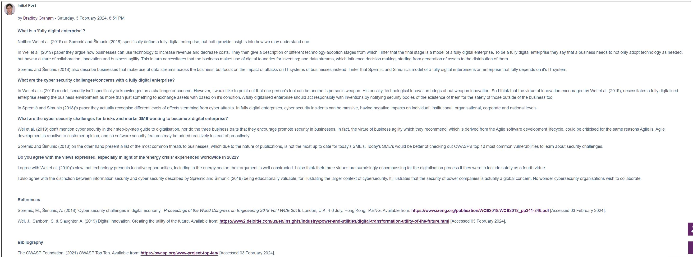
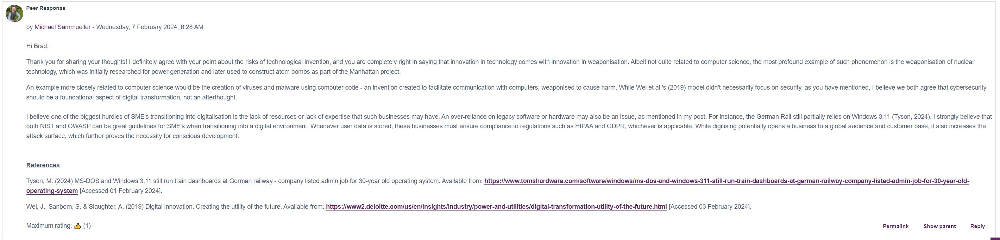
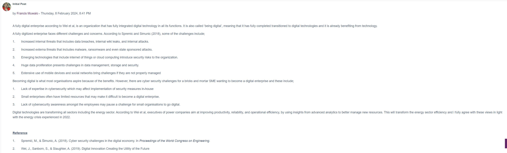
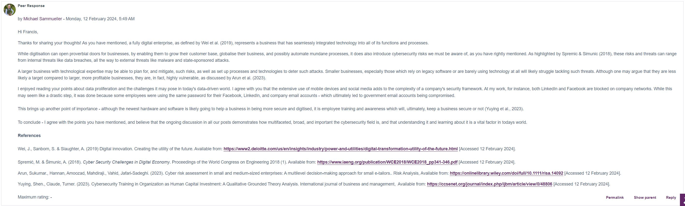

Unit 2: Artefacts
Collaborative Discussion
Part of this unit was to respond to two of our peer's posts:
Peer Response 1
 Peer Response 2
 Solar Winds Exploit presentation
We were tasked to create a short presentation about the Solar Winds exploit in terms of the Cyber Kill Chain Model.
Vulnerability Analysis – Literature Review Activity
Carry out a literature search/audit on software sites and the national vulnerabilities database to create a baseline audit on potential vulnerabilities with websites.